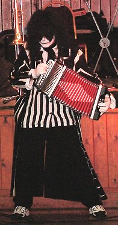
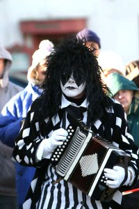
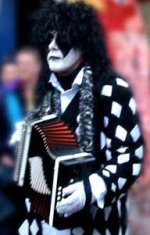
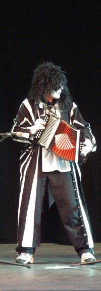
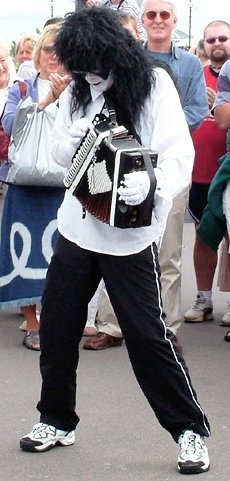
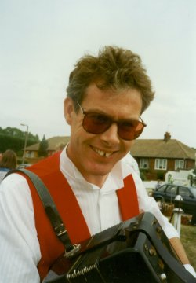
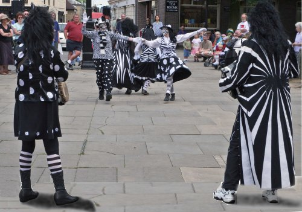
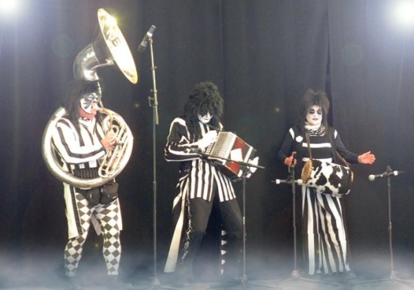

Robin Griggs 1957 - 2008
Rob died on 29th January 2008. He was the creative and performing powerhouse of the Pig Dyke band for nearly twenty years, and created the predecessor of this website, the Pig Dyke music CD and the video of Pig Dyke sold last year. He was the most imaginative and passionate friend we had - not easy, but he contributed enormously to the team and to all his friends.
This page lists tributes to Rob that we received following his death. There are downloadable tracks on the Frost and Fire page, featuring an album he made with John Foreman on guitar. That page also contains (since November 2022) a tribute to Rob from John Foreman, along with the story of how the album was made.
Tributes to Rob
from Sadie

I met Rob while dancing with Yaxley Morris and then he became the musician to the side. There was a change in the way the music was played and he was introducing his own tunes. After I had been away for a few weeks one time I could hear that tunes, that I knew, were different. They were developing. It was my first experience of 'live music'. Rob's tunes weren't written down, they weren't dots - on lines - on paper, the music was in the man and the man was in the music! His tunes and how he played them was so very special.He was good at many things; he set very high standards for himself. Usually it was hell to get posters, designs, recordings, videos etc from him as he always wanted to improve them just that bit more.
He had an encyclopaedic knowledge (especially of military history) and was a great to have as a member of your quiz team, if you could drag him there!
His sense of humour and quick mind gave us some great times, especially when trying to write a script, as at Sidmouth. He was always along what ever tangent we were off on, and frequently two thoughts ahead, so that it seemed like that Two Ronnies'sketch 'Answering the question before it is asked.'
At the end of last year I was passing under a bridge with an unusual name and apt carving. I photographed it and sent the message. 'Passing under 'Grumpy Old Man Bridge.' How come you have a bridge named after you?' His reply was lightening fast and humorous. We weren't constantly in touch but there was always instant rapport.
I miss you Robin, it was joy to dance to your tunes. Your understanding and friendship lightened my life.
I will think of you, as I light a candle for you but I hear you say- - I know you Sadie it won't be one candle but will be 'forkandles'- and you will laugh in that way that only you did.
You had the last laugh, you are gone.
I have my memories; you are still with me, my friend.
from Janet and Katey

We first met Rob at Straw Bear 2007. We had been to going this local event for about 5 years and had not failed to notice 'those dancers in the black & white' who seemed to be having the most fun. I wanted to join in the fun and occasion of it all and I made up my mind to approach someone. Anyway Rob was the person I approached in the school after the dancing. He was so enthusiastic and passionate, I wanted to join so much. He gave us details and we turned up at the allotted time and place. My daughter and I were welcomed by everyone and have now been part of the Pig Dyke family since then.We have met some wonderful talented people like Rob and been to some great places and events that have so enriched our lives. Sadly we only knew him for a short time but one lasting memory is of Rob at his 50th Birthday party wanting us to sing 'Grumpy Birthday' rather than 'Happy Birthday' to him. His personality and his musical and artistic talents will be greatly missed but we're sure he will always be part of Pig Dyke in spirit.
from Phil Watson
Over the years mine and Rob Griggs paths crossed quite a lot in the small world that is the Morris.
As a dancer, dancing to Robs playing was always a joy, as he had that rare ability to lift a side, no matter how tired they were, or how mundane the occasion, simply by the joi-de-vivre of his playing. He was an enthusiast for his music, and an enthusiast for the dances and dancers he played his music for.
I cannot speak for the Molly world but for certain the Cotswold dancers have much to thank him for.
In latter years I had not danced much to his playing but Rob was always one with a little joke in response to my pretended avoidance of Pig Dyke. our exchanges over the years gave me a great deal of laughter and I will miss his presence at Straw Bear and other events that I studiously ignore Pig Dyke.
If he had a God I hope that God played music, and that Rob is now sat somewhere playing along.
Phil Watson
Bunnies from Hell
Open Morris

from Mandy
We shall meet, and know, and remember,
and love again.
I will never forget.
Till next time round, Sweet Scary Man.........
Bright & Blessed Be.
from Glen, Steve and Holly (the Fan Club)

We first saw Pig Dyke at Towersey August 2003 Holly and her friend Charlotte had taken their camping chairs and sat watching Pig Dyke get ready. They were transfixed and Holly fell for Rob. Who wouldn't? He was charming and lovely to look at with and without the characteristic coat and make-up. That autumn at "Folk in the Fall" at Queen Elizabeth Hall on the South Bank we took Holly and some of her friends for her 8th birthday bash (all in kit of course)... Rob had made a picture of Pig Dyke and put "happy birthday Holly" and the date on it... He had made a video and presented that too. She was beside herself and kept these treasures (with the later CDs) at the head of her bed... she was truly in love!from that moment on we stalked Pig Dyke and turned up at as many gigs that we could get to from West London and we became the Fan Club. The energy he put into his music was unique and we loved it, it sounded fresh every time he played it. Rob's easy going nature meant we fell into a friendship which although it has been all too short was a good one. We spent long long hours talking about films, sport and of course endlessly about Pig Dyke. At festivals we would sit together outside the tent sometimes until dawn. At Sidmouth (probably to the annoyance of other campers) we laughed all night .. God knows what about - a dancing mechanical turkey had something to do with it. But most of all he loved home, and the Fen skies, we all lay out one night looking at shooting stars.
I hardly ever saw Rob play the melodeon when it wasn't for Pig Dyke but one night at Broadstairs we were talking about his Cotswold days and he played a tune and Helen danced. It was a clear moonlit night and a lovely, poignant, but brief, interlude which for some reason stayed with me. On the news of his death I wrote this:
The Dance
He stands straight and strong as an English oak
Arms tucked in like the wings of a hawk
His head is bent over the melodeon
He touches the keys with tender ungloved hands
She faces him
She is poised and ready to dance holding white hankies like small
flags
As the music starts her feet cross and jump lightly to the
music
He plays she dances
She dances he plays
The flags are whipped and crossed
A fleeting look between them reveals past intimacy
This melodeon is silent now
Boxed and closed forever
The coat and gloves lie still and gather dust
No more will we witness the dance
Our prancing steps are leaden, silent and still
The look
The smile
The laugh
The music
The tenderness of the ungloved hand
All gone
But as we listen to the tunes left behind the dance moves on
Hand passes over hand and with tear-stained faces
we look up bravely to greet a new Fen dawn
Rob was driven by perfection and in so many respects we can say he reached his full potential, it was a privilege to know him. However, we and the world didn't come up to his expectations... we always thought he would get well and be the old Rob again. I believe latterly he found happiness and was turning the corner.... but now he is gone and we miss him. Sorry Rob, we could have done more......
from Serena Day

I remember the times going back many years when Rob and his friends spent hours and hours looking at the stars and just sharing a companionable silence or being silly and laughing till we cried. We usually crawled into our beds in the small hours of the morning. We never cared that we had a full days dancing ahead of us - just spending times with friends was more important.He had that same stance that Mike Hurry had - leaning over the melodeon so that he was at one with the instrument. His music unique, uplifting and inspiring. In tune with the dance and the dancers.
As with the loss of any special friend we can never share those special times again but they will always be printed in our hearts forever. My memories of Rob will be brought to mind time and time again, sometimes in the quiet of the night and sometimes when Pig Dyke are together and recalling festivals, bookings, practice nights, new years eve and all the other times that we spent with Rob. There will be laughter and more tears as we continue to remember him.
I will never forget him and like Mike Hurry he will always hold a special place in my heart.
A tribute to someone special, someone unique - until we meet again.
from Sharron Woodward
I have known you for 17 years from my early days when we danced as Yaxley Morris and Herbaceous Border with Pig Dyke kit being worn for only a few days in the year around Straw Bear. What will I do without you, you always knew when to ring and I had Isaac wet from his bath, it was almost as though you were psychic.
Your music always lifted me when I was tired and hot and just wanted to sit with my feet in a bucket of water - somewhere I found more energy to dance.
I remember that evening when Helen danced for you in the moonlight, it was very special and after you had finished playing and Helen dancing there was a companionable silence to what we had witnessed.
One fond memory I will treasure is on May Day a few years ago in a coffee shop in Cambridge sharing a kitkat with you - would love to have had a photo of that, but the memory is enough.
God rest my friend - until we meet again...
from Kristine O'Brien of Orion Sword, Boston, Mass.
I just heard from Debbi about Rob's death. I'm so sorry. He was a person around whom a lot of energy flowed - and I can't quite imagine the effects that his death will have on all of you as individuals and as a group.
We being on the outside, of course, only saw, heard and felt the positive energy - which we will miss tremendously. And the good thing about musicians who write tunes, is that if you can hum some of their music you can feel like you still have a part of them with you.
love to you all,
Stine
from Karen & Ian Downham, Rhubarb Tarts Molly
On visiting Pig Dyke's website recently, we were taken aback to see that Rob Griggs has died. We had only seen him playing a couple of times, but really enjoyed his distinct & individual style. You must all be feeling the loss. We just wanted to offer our condolences.
from Simon Bilsborough
As a one-time and part-time musician with Yaxley Morris and then Pig Dyke Molly back in the late 1980s/early 1990s I have many happy memories of jamming along with Rob on Straw Bear Day and other tours. Even then, when the music to dance to was the "traditional" collected molly tunes, it would not be long before Rob would jazz it up, play it faster, and throw in an unexpected chord or three. It was obvious then that he was buzzing with creativity and wanted to take what he knew and add his own very distinctive feel and pattern to the music. This creativity just flourished and prospered, and the drive and energy that this brought to the music reflected I think the creative drive and energy that Rob possessed. He was also a very technically accomplished musician, and also (as with many morris musicians) very generous in sharing out his tunes and explaining his techniques. As well as the Straw Bear Days, there also happy memories of Rob on various morris tours in north Wales - jamming by the bridge in the sunshine at Beddgelert stands out. He was certainly uniquely talented and made his melodeon sing in a way that few others can. But he was also good fun to be with, and just as his music would give a big lift to the dances, so I think in general Rob gave a big lift to those who knew him.
from Steve
My name is Steve and I sometimes play guitar for Orion Sword in the USA. I saw Chris and Stine last night and they told me the very sad news of Robin's passing. He and I spent a good amount of time talking when we were at Sidmouth with you a few years back and he and I kept a short correspondence for a time. I found him to be a warm and intelligent guy with a lot of talent and originalilty. We happened to be in the showers at the Sidmouth campground at the same time one morning and we were chatting when Helen called in and needed to speak with him about something. He took his washcloth and held it over his genitals like a fig leaf and and carried on as people came and went about him. I recall saying to myself, "I like this man".
Steve Levy, Orion Sword, USAfrom Rita and Peter
We are thinking of you all, the fun we had and that extra bit of height that Rob's music inspired us to produce, even when we were dancing uphill!
Rita and Peter Jackson (ex members now living in Mass USA)from Debbi Kanter
When Handsome Molly came to Straw Bear for the first time in 1998 we were dazzled by the excitement of Pig Dyke performances, all "color" and whirl, with driving uplifting music. We were grateful for the amazingly gracious and generous hospitality we were offered by the whole team (after all, no one knew us). Except for Rob, the brooding presence at the center of that music. Curiously, I think Rob had not spoken to any of us, though we were too busy to notice.
Years later, when I had become the "token" American on the team and had begun showing up (with perhaps alarming regularity) in Peterborough during a particularly late night gathering at Tony and Jan's we looked through photos and recalled that first trip. In his usual self-deprecating manner Rob proceeded to apologize for his rude behaviour. Becoming increasingly elaborate in his apologies, and thinking of more grandious ways of showing how sorry he was (something about flying to the US to apologize to George Bush directly) we ended up dissolving into riotous laughter. Over the years after that we referred often to that night, again with laughter. And we became great friends. Rob did work for an American magazine, which seemed to add to our connection. We teased each other about the cultural differences between the US and England. We exchanged phone calls and emails, especially during the last 5 months, when I've been dealing with the aftermath of breast cancer and he was expressing great concern, and I in turn was concerned with his problems.
We all have wonderful memories of times with Rob. He was incredibly talented, both as a graphic artist and as a musician. I don't know why, but he was always mercilessly hard on himself. I feel lucky to have known him, and I will miss him. But as Stine said, humming his tunes can make us feel like a part of him is still with us. And that's what I will be doing.
Debi Kanter, New Jersey, USA, who dances regularly (once a year!) with Pig Dyke Molly
I knew Rob from way back in the early 1990's when I danced with the famous Yaxley Morris.
I have so many happy memories of Rob from that time but these particular ones spring to mind:
May Day in Cambridge when we went punting - I swear I wet my knickers we laughed so much.When I brought an unfeasibly large rug in Portugal and Rob (bless him) managed to get it in his suitcase and carried it all the way home for me.The day he took me to Parsons Drove in his sports car and we discussed thighs.The passion he put into those Straw Bear Friday night plays and his devastation when one year the pyrotechnic failed to go off on the night.
Rob wasn't just gorgeous to look at he had a gorgeous personality to match .He was the best melodeon player I've ever heard. We were so proud he was our musician.
Rob drew a picture of me in Molly kit when I left Yaxley - it is one of my most treasured possessions (even more so now ). The Pig Dyke CD he sold me saw me through the worst days of morning sickness - I never did get around to thanking him .....
The last time I saw Rob was at Sidmouth a few years ago, I'm so glad I gave him a big kiss and cuddle.
Alison Hillier (as was) , HampshireMy friend Sarah who dances with Pig Dyke Molly has just told me that our friend, their melodeon player Robin Griggs, has just died from a blood clot in the lung.
It hasn't hit me yet, but I am absolutely devastated. I met Pig Dyke through Tom and Sarah at Sidmouth. They held a fantastic workshop and we danced out as the most interesting and rag tag molly group you could imagine.
Rob was absolutely great. I have fond memories of hanging out with Rob, and his then partner Helen , and Tony and Jan, all members of Pig Dyke, and I can honestly say, I felt totally at home with them all, and felt one of the team.
Rob had his problems, which I think contributed to his death, but I have wonderful memories of him. He was so kind to me as a new friend to the Pig Dyke Team, talked music with me as one musician to another, made time for me when talking to him and never made me feel small, and he gave amazing hugs.
I am knocked for six.
Rest in Peace, Rob. May your spirit be at peace.
There's going to be an enormous Rob-shaped space at Festivals and such.xxx
from Abigail's Gothic Violin blog, Feb 6, 2008
from Brazenose Morris
We would like to thank you for being part of our side for five years. Although not a dancer, you understood the dancers and your music was full of life; you made the traditional tunes your own. We will remember the fun we had dancing to your music both during practices and at public events - when we shared achievements like winning the Gordon Crowther memorial staff. There were also the social times like walking in Yorkshire and Derbyshire and New Year parties. Morris was so important in your life and you shared your enthusiasm with us.
love from Avril, Jo, Kelvin, Nicki, Patsy, Una
from Malcolm Batty
I have just visited Pig Dyke's website and was shocked to hear of the sad news about Rob. His presence and skills are a memory of Pig Dyke's performances that will always be with me. My first sight of Pig Dyke filled me with admiration and a feeling that traditional dance was indeed a living tradition that could be taken to new heights. I saw Rob as the driving force behind the image and the energy. His passing is a great loss to us all.
I can't express enough how much I feel that Pig Dyke promotes the future of traditional dance. Rob was, maybe reluctantly, the face of Pig Dyke in vision and music. Please let his image continue and expand the general English folk dance scene.
Malcolm Batty, Harwich Morris Men, Soken Molly Gang & Good Easter Molly GangFuneral tributes
The following two tributes were read at Rob's funeral.
from Tony Forster
Funny how first impressions can be wrong. Twenty years ago a girl joining the dance team I had recently formed brought along her boyfriend. He sat in the corner, obviously switched-off from the dancing and with the music. What is she doing with a boring bloke like that, we thought?
Fast-forward seventeen years. The main arena stage at the Golden Jubilee of the UK's biggest folk festival. Someone is negotiating with the professional sound engineers, with the lighting geeks, managing a publicity and poster campaign, arranging the stage for the thirty minute overture the Pig Dyke Molly band was to play to three thousand people, planning how best to present one of the most original dance performances the stage would see that festival. That boring bloke was in control, perfectionist, proud of the team he was the heart of. And when he played over that sound system to those three thousand people, the music was a revelation - melodic in a new way, driving, passionate and unique.
That music - there is no other music like it. Music for folk dancing played by someone who hated folk music - seventies rock meets primitive, controlled rhythm and leaves the feet itching to lift, the mind swamped with emotion. Rob was a superb composer and an inspired performer. He was the more wonderful because he was musically illiterate. If you asked him to play a G, he would look blank. I treasure the memory of the very expert musician who told Rob he was playing the wrong chords to the music he had written himself. He was of course right - by textbook rules they were the wrong chords - but how much better than the right chords they were. They were the chords he wanted and his artistic understanding was acute - he felt rightness in a way the merely musically knowledgeable couldn't imagine.
The music was the essence of Rob for me. It was instinctive, it was the result of infinite planning and perfecting, it was passionate, it was his alone. He brought the same qualities to all he did - especially his professional work, for national magazines and other work clients. His art was the result of hard graft - particularly as he taught himself computer draughtsmanship - and yet spoke of inspiration and apparent careless exuberance. Pig Dyke was immensely lucky in the website he created, the posters, the CD and the video - professional quality on a home computer. His work in these areas - in addition to his wonderful music - created a professionalism which established the team nationally and internationally. His creativity overflowed into the whole life of the team and his friends - I remember with glee his performances in Pig Dyke Straw Bear plays, where he danced ballet with carefree vigour, sang the Mr Blobby rap he had written with previously unguessed skill, and roller-skated in a duel between the Romans and the little-known British tribe the Ides of March. In between performing he wrote the scripts, produced the scenery and props, planned the lights, sound, lasers and dry ice, and compiled the sound track. He wrote wonderfully evocative incidental music for Ramsey Festival's open air Midsummer Night's Dream.
Being in the dance team rapidly led to real friendship. Jan and I shared with Rob meals, theatre trips, debates on a huge range of subjects, holidays (Rob and I cringed at the memory of sitting astride a knife-edge ridge up Snowden, a thousand feet of nothingness below each worried foot, and listening to our wives chatter happily while we froze in fear).
First impressions were radically wrong. Rob was as far from “that boring bloke” as it was possible to be. Rob lived life more fully than most of us can imagine - he soared to greater heights and sank to greater depths. I couldn't go with him to the heights and am glad I didn't share the depths. But I feel honoured to have known him and for him to have taken me beyond my world. I am honoured that his creativity gave Pig Dyke Molly a dimension way beyond a folk-dancing team, and led us to performance standards and originality other groups didn't even know they lacked. I am glad to have gone with him on creative leaps which led to plays about Star Trek visiting Fenland traditions like the Yaxley Brick Counting festival, or the Phantom of Whittlesea mere meeting Jaws and the Titanic. My life and that of so many others - including many he never spoke to - has been enriched by “that boring bloke”.
Rob said he wanted the Yes song that will finish the service to be played at his funeral. It has a refrain “we seemed from all of eternity”. For those privileged to have known him, what Rob achieved and was will stay with us for all of eternity.
Tony Forster, Boss of Pig Dyke Molly11th February 2008
from Chris
Goodbye My Friend
Goodbye my friend and leave the brightness of that cheeky grin that
I may see the joy within your soul
Goodbye my friend and leave your tune that I may rest and listen and
reflect
God speed my friend and leave the power of your creativity that I
may dabble in your extensive knowledge
Go well my friend and leave your lovely image that I may see you
whenever I turn
Go safely my friend and leave the laughter that we shared and I will
laugh with you still
Goodbye my friend and leave your love to comfort all who love you
Sleep well my friend and I will bless you every morning
